Regression comparison
Download resultsAggregation weights
\widehat y(x)=y_{\rm mean}+y_{\rm std}\sum_{h=1}^{H}\beta_h\mu_h(x)Coefficients can be negative and need not sum to one. Intervals describe coefficient uncertainty; the dashed reference is DE’s fixed 1/H weight.
BDKN


Each density panel uses its own X range for readability; coefficient intervals above share a common axis. Prior reference conditions on fitted noise. Contribution shares use held-out inputs; test targets are used only for scoring.
| Network | β mean | 95% low | 95% high | P(β > 0) | Contribution share | Test RMSE | Test NLL |
|---|---|---|---|---|---|---|---|
| 1 | 0.22455 | -0.37810 | 0.82721 | 0.82033 | 0.23201 | 0.18210 | 804.83344 |
| 2 | 0.19524 | -0.41183 | 0.80230 | 0.78882 | 0.25037 | 0.19040 | 1165.62672 |
| 3 | 0.19074 | -0.40289 | 0.78436 | 0.78862 | 0.11231 | 0.18708 | 295.28098 |
| 4 | 0.24410 | -0.34753 | 0.83573 | 0.84207 | 0.22744 | 0.17958 | 1034.70615 |
| 5 | 0.14857 | -0.43568 | 0.73282 | 0.74044 | 0.17788 | 0.18625 | 714.88349 |
Functional repulsion · BDKN
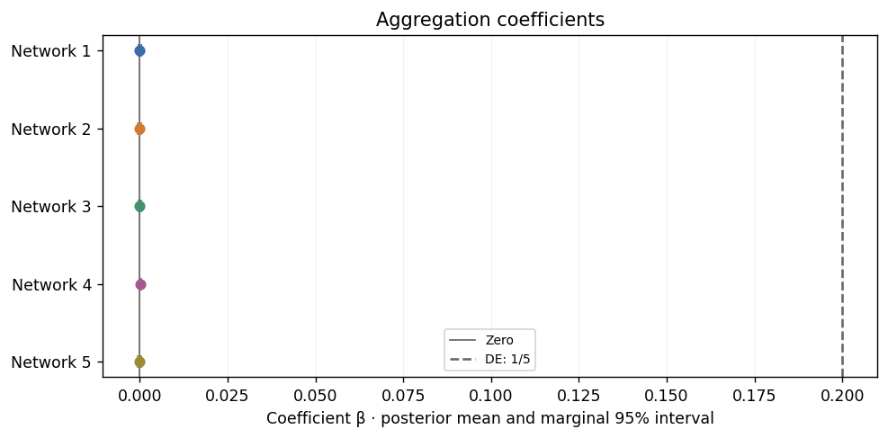
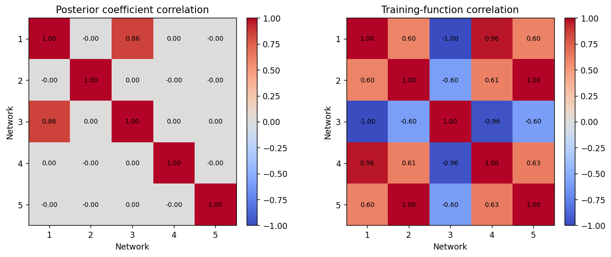
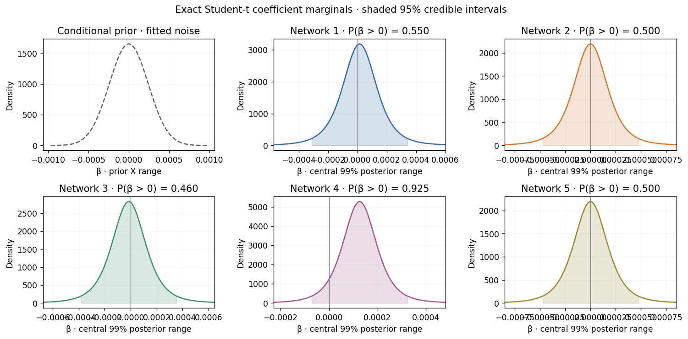
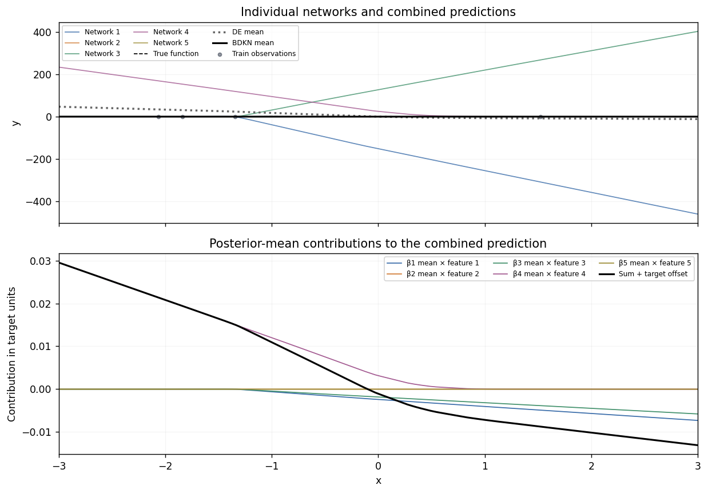
Each density panel uses its own X range for readability; coefficient intervals above share a common axis. Prior reference conditions on fitted noise. Contribution shares use held-out inputs; test targets are used only for scoring.
| Network | β mean | 95% low | 95% high | P(β > 0) | Contribution share | Test RMSE | Test NLL |
|---|---|---|---|---|---|---|---|
| 1 | 0.00002 | -0.00031 | 0.00034 | 0.55028 | 0.21725 | 235.54535 | 306.98685 |
| 2 | 0.00000 | -0.00047 | 0.00048 | 0.50026 | 0.00000 | 0.20134 | 569.06968 |
| 3 | -0.00001 | -0.00038 | 0.00035 | 0.45961 | 0.16994 | 204.50992 | 559.92701 |
| 4 | 0.00013 | -0.00007 | 0.00032 | 0.92488 | 0.61281 | 98.11131 | 96.97739 |
| 5 | 0.00000 | -0.00047 | 0.00048 | 0.50025 | 0.00000 | 0.18606 | 95.33859 |
Weight repulsion · BDKN
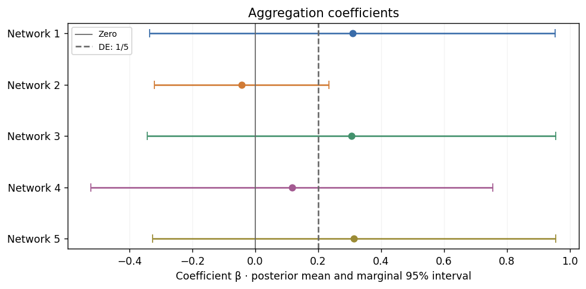
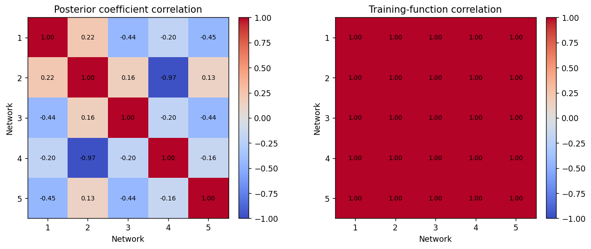
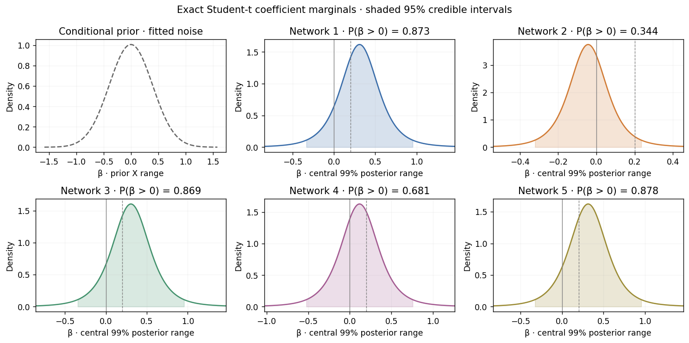
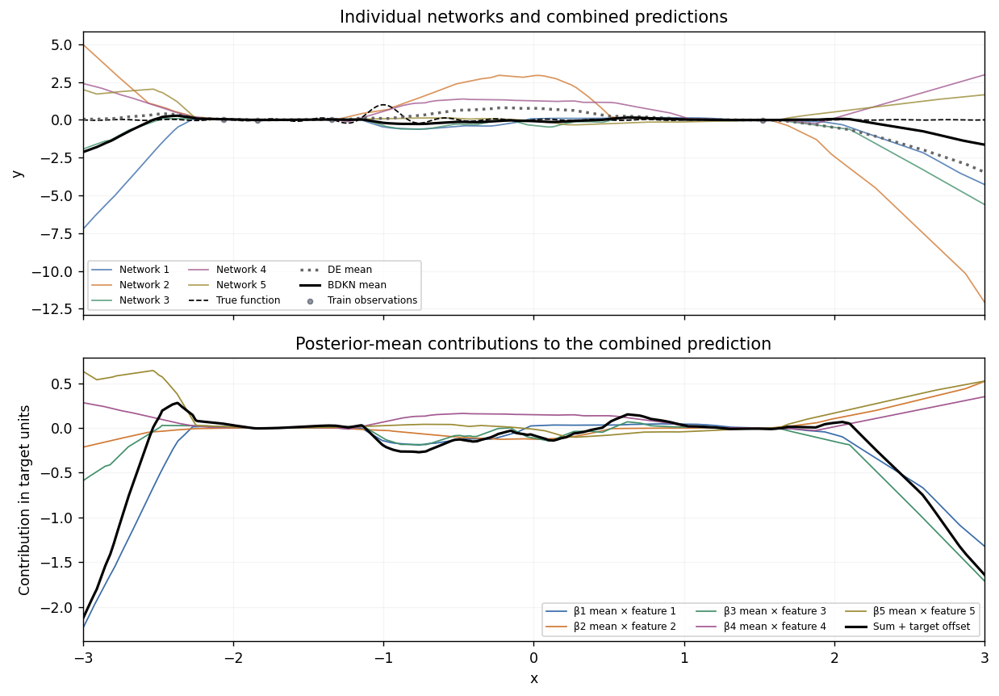
Each density panel uses its own X range for readability; coefficient intervals above share a common axis. Prior reference conditions on fitted noise. Contribution shares use held-out inputs; test targets are used only for scoring.
| Network | β mean | 95% low | 95% high | P(β > 0) | Contribution share | Test RMSE | Test NLL |
|---|---|---|---|---|---|---|---|
| 1 | 0.30915 | -0.33451 | 0.95281 | 0.87338 | 0.32559 | 1.67232 | 45877.76382 |
| 2 | -0.04311 | -0.32095 | 0.23474 | 0.34442 | 0.11079 | 3.30972 | 10130.06040 |
| 3 | 0.30540 | -0.34356 | 0.95436 | 0.86929 | 0.26118 | 1.38815 | 23100.79851 |
| 4 | 0.11695 | -0.52116 | 0.75506 | 0.68118 | 0.11680 | 1.07794 | 505.37883 |
| 5 | 0.31457 | -0.32653 | 0.95568 | 0.87762 | 0.18564 | 0.78738 | 64217.46582 |
First-order repulsion · BDKN
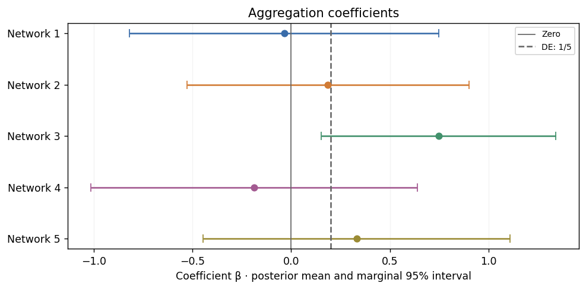
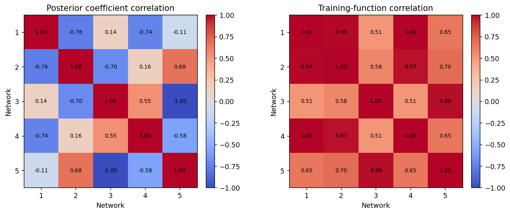
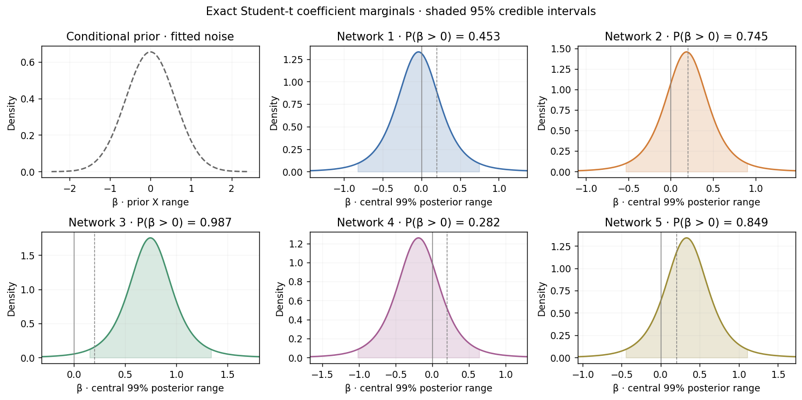
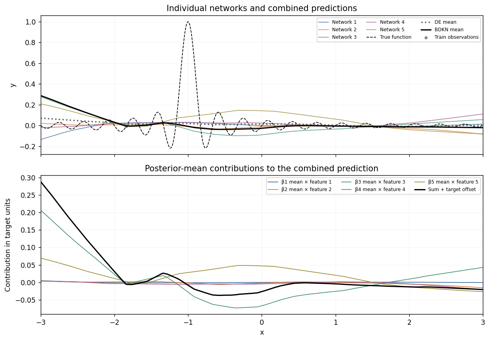
Each density panel uses its own X range for readability; coefficient intervals above share a common axis. Prior reference conditions on fitted noise. Contribution shares use held-out inputs; test targets are used only for scoring.
| Network | β mean | 95% low | 95% high | P(β > 0) | Contribution share | Test RMSE | Test NLL |
|---|---|---|---|---|---|---|---|
| 1 | -0.03559 | -0.81854 | 0.74736 | 0.45283 | 0.00835 | 0.17216 | 40.00468 |
| 2 | 0.18616 | -0.52882 | 0.90113 | 0.74513 | 0.04507 | 0.17863 | 47.36474 |
| 3 | 0.74682 | 0.15275 | 1.34088 | 0.98744 | 0.55336 | 0.19853 | 1348.18409 |
| 4 | -0.18686 | -1.01387 | 0.64015 | 0.28224 | 0.06115 | 0.17361 | 245.54197 |
| 5 | 0.33109 | -0.44548 | 1.10765 | 0.84897 | 0.33208 | 0.18400 | 52.62148 |